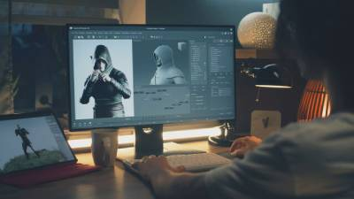
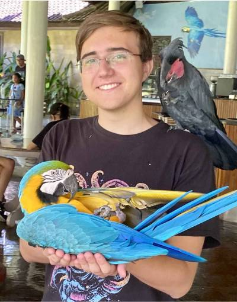
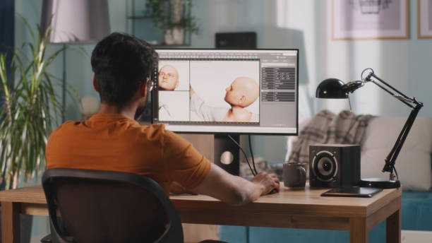
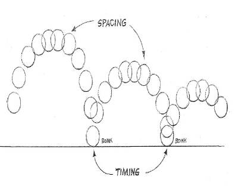

What Exactly is 3D Animation?
3D animation is the process of creating moving digital characters, objects, and enviroments within a three-dimensional space. Unlike 2D animation, where images are drawn frame by frame, 3D animation relies on models, rigging, and movement controlled by software.
How Does It Work?
- Modeling - Creating the digital character or object.
- Rigging - Adding a skeletal structure to allow movement.
- Animation - Moving the model using keyframes or motion capture.
- Rendering - Generating the final animation with lighting and textures.
Why 3D Animation?
3D animation is used in movies, games, VR, and even medical simulations! Whether you're an aspiring artist or just curious about the process, learning 3D animation can open up a world of creative possibilities!
Getting Started...
If you're new to 3D animation, start with beginner friendly software like Blender (free) or Autodesk Maya (industry standard & expensive paid subscription). There are countless online tutorials and courses available to help you learn at your own pace.
About Me
Hey everyone! My name is Bogdan Gerasymenko, and I've been passionate about 3D animation for over 7 years! I started my journey in animation using Blender, and over time, I expanded my skills into Maya, Unreal Engine, and other industry-standard tools/software.
My Journey Into 3D Animation
Truth be told, I’ve been experimenting with animation for quite some time now. Ever since I was 12, I would make little LEGO and clay stop-motion videos in my room, completely falling in love with the process. Later, my parents got me an iPad and a pen to start drawing digitally—a gift that opened up a whole new world of creativity for me.
It wasn’t until 2018, while scrolling through YouTube, that I stumbled upon an animation reel by Andrew Ford. It was a motion capture reel for Uncharted 4, and I was absolutely blown away by the fluidity, realism, and sheer craftsmanship of the work. That moment changed everything for me... I knew I had to give 3D animation a try.
At the time, I didn’t have a powerful computer or a big budget, so I started with Blender, drawn to its free and open-source nature. Since my PC was weak and couldn't handle complex scenes, I focused on viewmodel animations—first-person weapon and hand animations—because they required less processing power and were easier to run. This allowed me to learn animation fundamentals without being held back by hardware limitations.
As I experimented and pushed myself to learn more, I also began saving up for a better PC that could handle more complex scenes and rendering. For about a year, I resold candy at school, eventually saving enough to build my own custom rig.
From that point on, I dedicated myself to practice and refinement. I landed opportunities to work on various indie projects and game mods, gaining valuable real-world experience. Some of the projects I’ve contributed to include Squad: Vietnam, Half-Life: Vance, Hunt Down The Freeman, and currently Exorush, where I serve as the lead animator.
Animation isn’t just a hobby for me—it’s my passion. It’s the perfect blend of storytelling, problem-solving, and technical artistry, and I can’t wait to see where this journey takes me next.
Why I Love Animation
- Storytelling: Animation allows me to bring stories to life in ways live-action can't.
- Creativity: The ability to design worlds, characters, and movements from scratch is amazing.
- Problem-Solving: Whether it's fine tuning a walk cycle or cleaning up motion capture, animation keeps me thinking and improving.
What I'm Working On
Currently, I’m the lead animator on Exorush, a fast-paced shooter set in the future. My role covers character animation, viewmodel animation, motion capture, and overall animation direction. In addition to creating high-quality animations, I’m also guiding and teaching two animators on the team, helping them refine their skills and maintain a consistent animation style across the project.
Beyond Exorush, I’m always experimenting with new animation techniques, refining my workflow, and studying different styles—from hyper-realistic mocap work to more stylized, exaggerated animation. I’m also diving deeper into Unreal Engine 5, exploring ways to seamlessly integrate animations into gameplay to enhance player immersion.
At the end of the day, my goal is to enhance gameplay through movement, whether that’s through cinematics, gameplay animation, or first-person mechanics. Every new project, big or small, is another opportunity to grow, refine my craft, and bring characters to life in ways that feel fluid, responsive, and immersive.
Let's Connect!
If you're into animation or just want to talk about games, movies, or creative projects, feel free to reach out! I'm always happy to discuss animation techniques, industry trends, or bounce around cool ideas.
Best Time to Get Started in 3D Animation
When is the best time to start learning 3D animation? The short answer: right now!!!
With the increasing accessibility of animation tools and online resources, there has never been a better time to dive into the world of 3D animation. Whether you're a complete beginner or someone looking to refine your skills, getting started early allows you to build a solid foundation and improve over time.
Why Start Now?
- More Resources Than Ever: Online tutorials, free software, and supportive communities make learning easier than before.
- Growing Industry Demand: The demand for skilled animators in gaming, film, and VR is increasing year by year.
- Developing Your Style Takes Time: Animation is an art that requires practice. The sooner you start, the sooner you'll find your creative voice.
How Long Does It Take To Get Good?
Like any craft, animation takes time and dedication. Some animators see progress within a few months, while mastering the art can take years. The key is consistent practice, learning from feedback, and staying inspired. Heck, it took me around 4 years until I started to see some improvement in my work!
So, if you've ever thought about getting into 3D animation, don't wait for the "perfect" time—start now and grow as you go!
What is the best place to learn and work?
Choosing the right place to study or work in 3D animation can make a huge difference in your career. Whether you prefer structured education, online learning, or jumping straight into the industry, here are some of the best locations to consider.
Top Schools for 3D Animation
- Gobelins: One of the most prestigious animation schools, known for producing world-class talent.
- CalArts: Founded by Walt Disney, this school has a strong reputation for animation and storytelling.
- Vancouver Film School: Offers intensive training programs with strong industry connections.
- SCAD: A top-tier school with strong 3D animation, game development, and VFX programs.
- Academy of Art University: Offers both on-campus and online animation degrees with industry-focused training.
Best Cities for Animation Jobs
- Los Angeles, USA: Home to major studios like Pixar, Disney, DreamWorks, and Naughty Dog.
- Montreal, Canada: A booming game and VFX hub with companies like Ubisoft and Framestore.
- Tokyo, Japan: A global leader in animation, especially for anime and game development.
- London, UK: A strong VFX and animation industry with companies like Framestore and Industrial Light & Magic.
- Vancouver, Canada: A major animation and VFX hotspot with studios like Sony Imageworks and EA.
Online Learning Platforms
- Animation Mentor: A mentorship-based program taught by industry professionals.
- CG Spectrum: Offers specialized courses in animation, VFX, and game development.
- School of Motion: Focuses on motion graphics and animation fundamentals.
- Udemy & Coursera: Affordable courses for beginners and intermediate learners.
- Blender Cloud: A great resource for learning Blender and 3D animation techniques.
How to get into 3D Animation
Breaking into 3D animation can seem overwhelming at first, but with the right approach, anyone can learn and grow in this field. Here’s a step-by-step guide on how to start your journey.
1. Learn The Fundamentals
Before jumping into complex animation software, it's crucial to understand the basics of animation principles:
- The 12 Principles of Animation: Squash & stretch, anticipation, timing, and more.
- Observational Skills: Study real-life movement and analyze how objects and characters move.
- Basic Drawing Skills: While not required for 3D, a strong sense of motion and posing can help.
2. Choose the Right Software
There are many tools available for 3D animation, each with its own strengths:
- Blender: Free and open-source, great for beginners.
- Maya: The industry standard for animation in games and film.
- Unreal Engine: Useful for real-time animation and game development.
- 3ds Max: Popular in game development and VFX.
- Houdini: Great for procedural animation and VFX-heavy projects.
3. Start with Simple Projects
Don't try to animate a complex fight scene on your first try. Instead, start with:
- Ball Bounces: to understand weight and timing.
- Walk Cycles: to practice character locomotion.
- Simple Interactions: like picking up an object or waving.
4. Follow Online Courses & Tutorials
There are tons of free and paid resources to help you learn:
- Animation Mentor: Online courses taught by professionals.
- CG Spectrum: Personalized training for animation and game development.
- Blender Guru & CG Geek: Free tutorials on Blender animation.
- Gnomon School: Advanced courses for 3D professionals.
5. Practice, Practice, Practice
Consistency is key. Set small goals, complete projects, and refine your skills over time. Participate in online animation challenges or work on small personal animations.
6. Get Feedback & Improve
Join animation communities, share your work, and seek constructive criticism:
- 11 Second Club: A monthly animation challenge.
- Polycount & ArtStation: Great forums to showcase work and get advice.
- Reddit, Facebook, and Discord:Helpful communities for learning and feedback.
7. Build a Portfolio & Apply for Work
Once you have solid work, start assembling a demo reel showcasing your best animations. Tailor it to the kind of animation work you want to do (games, film, or VFX). Then, start applying to studios or freelance opportunities.
Starting in 3D animation takes time and dedication, but with persistence and passion, you can turn it into a fulfilling career!
Why I Chose Game Animation
Game animation isn’t just about making characters move—it’s about creating a seamless, immersive experience that players can feel. Every action, reaction, and movement needs to serve gameplay while maintaining the artistic vision of the game.
Animation That Feels Good to Play
In games, animation isn’t just visual... it’s interactive. Whether it’s a tight first-person reload, a responsive melee attack, or a fluid traversal system, animations should feel intuitive and satisfying. My goal is to create animations that not only look great but also enhance the player's control and feedback.
Blending Art and Function
Unlike film, where animation is purely cinematic, game animation has to serve the mechanics. Every frame needs to support the player’s actions, ensuring that movement is clear, responsive, and fun. Balancing realism with gameplay readability is what makes game animation such an exciting challenge.
Bringing Combat and Action to Life
From weapon handling to enemy AI behaviors, animation plays a huge role in making combat feel impactful. A good hit reaction, an expressive reload, or a weighty melee attack can make the difference between a game feeling satisfying or stiff. I love diving into motion capture, hand-keyed animation, and physics-based systems to make combat animations feel dynamic and immersive.
Creating Engaging First-Person Experiences
First-person animation is an art of its own—it’s the player's direct point of view and needs to feel natural yet expressive. Every hand movement, weapon swap, and environmental interaction should enhance immersion while keeping gameplay smooth and responsive.
A Passion for Gameplay-Driven Animation
What drew me into game animation was the ability to merge art with interactivity. Seeing animations not just as cutscenes, but as tools to enhance gameplay flow, pacing, and feel, is what keeps me excited about every new project. Whether it’s refining combat mechanics, polishing traversal, or designing responsive movement, I’m always looking for ways to push the experience further.